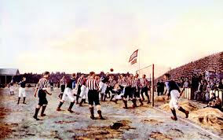

Origini Antiche: Giochi con la palla esistevano già 3000 anni fa in Cina (Cuju) e Mesoamerica. I Romani praticavano l'harpastum, che si diffuse in Europa.
Il Calcio Storico: Nel Rinascimento, il "calcio in costume" (o fiorentino) era popolare in Italia, specialmente nel XVI secolo.
Nascita del Calcio Moderno (1863): A Cambridge (1848) furono create le prime regole, ma la fondazione della FA a Londra nel 1863 segnò la svolta ufficiale, vietando l'uso delle mani (tranne per il portiere).
Espansione Mondiale: Il primo match internazionale si tenne tra Inghilterra e Scozia nel 1872. La FIFA fu fondata nel 1904.
Grandi Competizioni: Il primo campionato mondiale si svolse nel 1930 in Uruguay, vinto dai padroni di casa.
Il Calcio in Italia: Il primo campionato italiano risale al 1898, vinto dal Genoa. La Serie A a girone unico è iniziata nel 1929.
Oggi, il calcio è lo sport più popolare al mondo, gestito dalla FIFA e caratterizzato da campionati professionistici globali e dalla Coppa del Mondo.